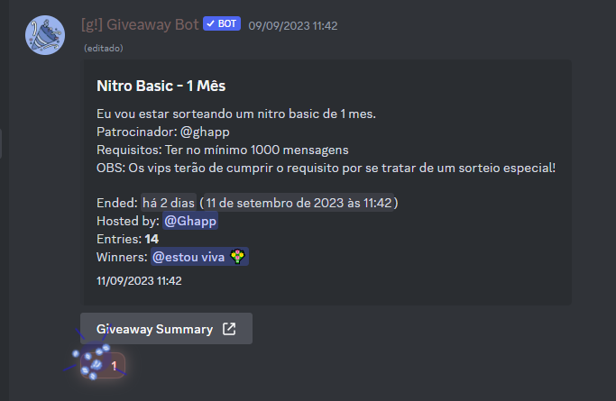

2° Edição do Jornal da Leusa! (09/09/2023)
Apresentado e reescrito por: Lestic
FMLLeus, bate recorde após sorteio!
FMLLeus, uma comunidade de Lestânia bateu um recorde que vai mudar a história dela!

O recorde se baseia em um sorteio, de um indivíduo chamado ghapp, moderador de lá, que ele fez, que era de um "NITRO" oque seria o VIP da comunidade, mas vem daí o recorde, ghapp provavelmente não sabia do recorde que o sorteio dele iria bater, porém, o sorteio dele entrou 14 pessoas, e foi o sorteio com mais pessoas que já obteve! E lembra de onde nós falamos "NITRO"? Então, esse foi o primeiro sorteio da Lestânia, onde houve nitro!